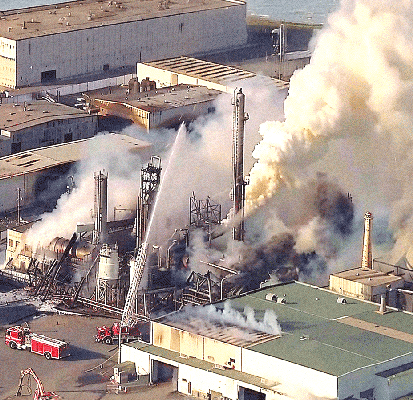
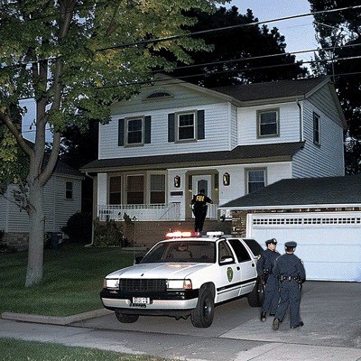

| COMMUNITY |
| Message Boards Chat Feedback |
| SITE SOURCES |
| Contents Help! Search CNN Networks |
| SPECIALS |
| Quick News Almanac Video Vault News Quiz |


|
Teen Hacker Arrested for Cyberterrorism Linked to Deadly Chemical Plant Explosion
 First responders on the scene of the Portland chemical plant explosion Damaged thousands of computers and took the lives of three
May 3rd, 1998
Web posted at: 6:40 a.m. EST (0340 GMT)OREGON (CNN) -- — After a shocking series of events, an 18-year-old boy from Oregon has been arrested after creating a website that wreaked havoc on over 7,000 personal computers and caused a deadly chemical plant explosion. High school senior, Jacob Gracey, was taken into custody yesterday by the FBI on charges of cyberterrorism, among various others.
The website, which caused computers to lock up completely upon visiting, quickly became a notorious prank among internet users. The link was shared widely, causing widespread damage as unsuspecting victims clicked on it. Some only suffered a troublesome forced reboot, while others faced significant data loss.
The situation escalated dramatically when the website incapacitated the entire computer network of a major chemical processing plant in Portland. The shutdown caused critical safety mechanisms to fail, resulting in an explosion that tragically took the lives of 3 employees. Federal authorities quickly intervened.
"We knew we had to act swiftly," said FBI Special Agent Mark Thompson, who led the investigation. "The damage caused by this website was catastrophic, and the fact that it had claimed lives and disrupted critical infrastructure made it a top priority."
Using advanced tracking techniques, the FBI was quickly able to trace the domain registration back to Jacob Gracey. The young hacker was apprehended without incident at his home. According to the FBI, efforts to take down the malicious website were mysteriously unsuccessful. As a temporary measure, they managed to secure it with a login page to prevent further access.
 FBI and local police collecting evidence at the Gracey household "Our cybersecurity team faced unexpected challenges in dismantling the site," explained Agent Thompson. "It was unlike anything we've encountered before. For now, the site is locked down, but our investigation into how it was created and why it attempts to remove it have been unsuccessful. We would like to emphasize to the public that this website is now part of an ongoing investigation. Any sharing or attempts to access will be met with legal action."
Further investigation into Jacob’s online activities revealed a troubling pattern. "We discovered that Jacob had been participating in extremist forums," said Agent Thompson. "His web history showed extensive engagement with radical groups, which raises additional concerns about his motives and potential influences."
Jacob Gracey is now facing serious charges, including cyberterrorism. If convicted, he could face significant prison time.
Interestingly, this is not the first time the Gracey family has been in the news. Less than two months ago, Jacob's twin brother, Tyler Gracey, was reported missing after failing to return from a camping trip. The disappearance has cast a shadow over the family, already struggling with the loss of one son and now grappling with the significant legal troubles of another.
Martha Gracey speaks 
306K/13 sec. AIFF or WAV sound Jacob’s mother, Martha Gracey, was reached for comment. Visibly shaken, she spoke about the family's recent hardships. "The disappearance of Tyler has been incredibly hard on all of us," she said. "Jacob took it especially hard. He started locking himself in his room, talking about how he knew where Tyler went and that he was close to finding a way to get him back. I was worried, but I never imagined something like this. I can’t imagine he ever intended to hurt anyone, he’s such a sweet boy."

The FBI has not commented on any possible connection between Tyler Gracey's disappearance and Jacob's cyber activities. However, they are not ruling out any possibilities as they continue their investigation.
"We're looking into all angles," said Agent Thompson. "Our primary concern is ensuring the safety and security of the public and preventing further incidents of this nature."
As the legal process unfolds, the Gracey family has once again managed to capture the attention of the public. This event highlights the growing threat of cybercrime and the importance of vigilance in the digital age. The case serves as a stark reminder of the potential consequences of online activities and the need for robust cybersecurity measures to protect against such malicious acts.
(CNN) — This is a developing story. Stay tuned for updates as more information becomes available.
Correspondent Amy Carmicheal contributed to this report.
Watch Science & Technology Week on CNN for more sci-tech stories.

|
Sound off on our message boards & chat |
|
© 1998 Cable News Network, Inc.
A Time Warner Company
All Rights Reserved.